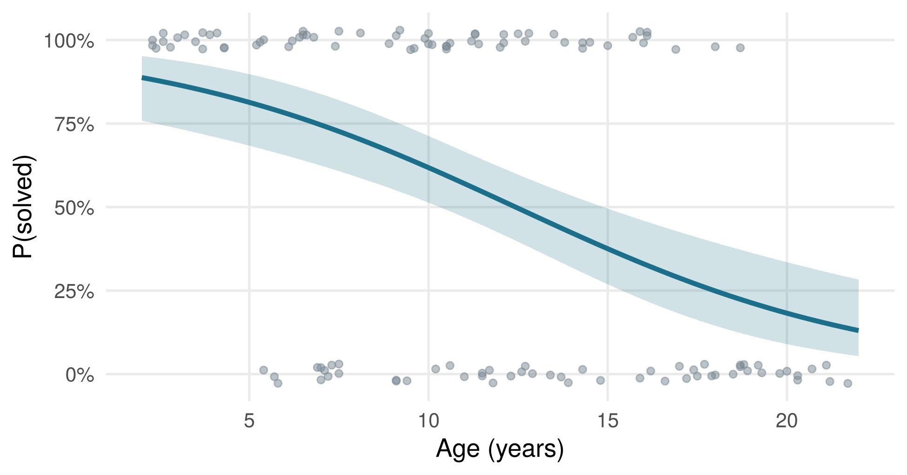
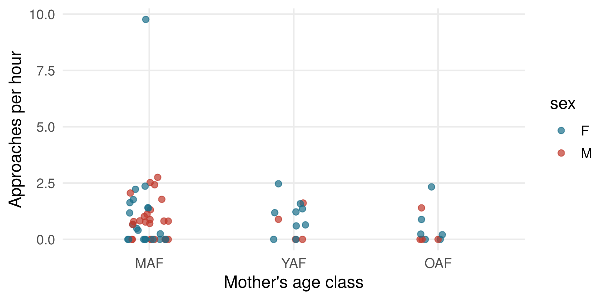
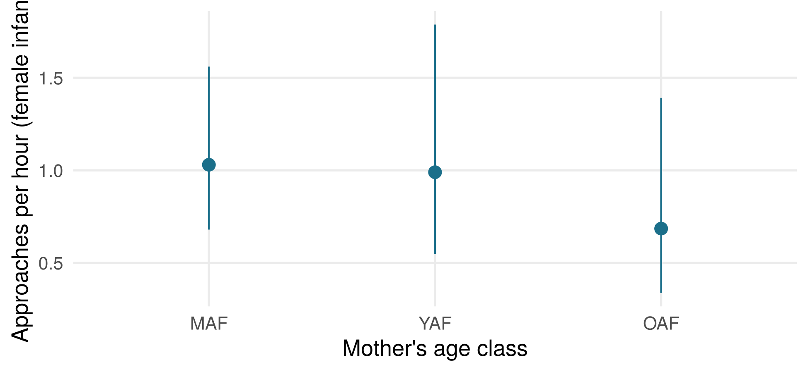

set.seed(10)
puzzle <- data.frame(age = round(runif(120, 2, 22), 1))
puzzle$age_c <- puzzle$age - 10 # centred at 10 years
puzzle$solved <- rbinom(120, 1, plogis(0.4 - 0.18 * puzzle$age_c))10 · Generalized linear models (GLM)
Week 3
What to do if the DV is not normal?
The first assumption we relax: normality.
In this session
- Why the linear model fails for binary data and counts
- The three parts of a GLM: distribution, linear predictor, link function
- Logistic regression: log-odds, odds ratios, predicted probabilities
- Poisson regression: rate ratios, offsets for different observation times
- Maximum likelihood, deviance and likelihood-ratio tests
- Checking GLMs: simulated residuals, overdispersion, the negative binomial model
- Practical: maternal approaches in wild Guinea baboons (real DPZ field data)
Learning goals
After this session you can
- explain why the linear model fails for binary and count data,
- name the three parts of a GLM: distribution, linear predictor, link function,
- fit and interpret logistic and Poisson regressions in R, on the response scale,
- detect overdispersion and know what to do about it.
Materials
Worked example 1: who solves the puzzle box?
120 monkeys are each tested once with a new puzzle box. Do younger monkeys solve novel problems more often? The response is binary: solved (1) or not (0). The data are simulated.
Logistic regression
The binomial distribution with the logit link: logit(p) = log(p / (1 − p)) = β0 + β1 · age.
glm1 <- glm(solved ~ age_c, family = binomial, data = puzzle)
summary(glm1)$coefficients#> Estimate Std. Error z value Pr(>|z|)
#> (Intercept) 0.4815479 0.21833960 2.205500 2.741906e-02
#> age_c -0.1982492 0.04362213 -4.544693 5.501545e-06exp(coef(glm1)) # odds ratios#> (Intercept) age_c
#> 1.6185778 0.8201655- Intercept 0.48: the log-odds of solving for a 10-year-old, i.e. P(solved) =
plogis(0.48)= 62%. - Slope -0.20 per year; odds ratio 0.82: with each year, the odds of solving are multiplied by 0.82. Odds are not probabilities: how much the probability changes depends on where you are on the S-curve. A rule of thumb: β/4 ≈ -0.05 is the maximum change in probability per year (at 50%).
Predictions on the response scale
Compute the confidence interval on the link scale, then back-transform, so that it stays within 0–1:
nd <- data.frame(age = seq(2, 22, by = 0.2)); nd$age_c <- nd$age - 10
pr <- predict(glm1, newdata = nd, type = "link", se.fit = TRUE)
nd$p <- plogis(pr$fit)
nd$lo <- plogis(pr$fit - 1.96 * pr$se.fit)
nd$hi <- plogis(pr$fit + 1.96 * pr$se.fit)
ggplot(nd, aes(age, p)) +
geom_jitter(data = puzzle, aes(age, solved), height = .03, width = 0, colour = col_lm, alpha = .5) +
geom_ribbon(aes(ymin = lo, ymax = hi), fill = col_glm, alpha = .2) +
geom_line(colour = col_glm, linewidth = 1.2) +
scale_y_continuous(labels = scales::percent) +
labs(x = "Age (years)", y = "P(solved)")
Test: likelihood-ratio test
glm0 <- glm(solved ~ 1, family = binomial, data = puzzle)
anova(glm0, glm1, test = "Chisq")#> Analysis of Deviance Table
#>
#> Model 1: solved ~ 1
#> Model 2: solved ~ age_c
#> Resid. Df Resid. Dev Df Deviance Pr(>Chi)
#> 1 119 165.52
#> 2 118 139.51 1 26.012 3.393e-07 ***
#> ---
#> Signif. codes: 0 '***' 0.001 '**' 0.01 '*' 0.05 '.' 0.1 ' ' 1Worked example 2: grunts in focal observations
90 monkeys are each observed once, for 10–60 minutes, and we count their grunts. Do higher-ranking monkeys grunt more? The data are simulated.
set.seed(3)
calls <- data.frame(rank_z = round(rnorm(90), 2), minutes = round(runif(90, 10, 60)))
mu <- calls$minutes * exp(log(0.15) + 0.35 * calls$rank_z)
calls$grunts <- rnbinom(90, mu = mu, size = 2) # overdispersed countsPoisson regression with an offset
The Poisson distribution with the log link. Because observation times differ, offset(log(minutes)) turns the model of counts into a model of rates (grunts per minute).
pois <- glm(grunts ~ rank_z + offset(log(minutes)), family = poisson, data = calls)
summary(pois)$coefficients#> Estimate Std. Error z value Pr(>|z|)
#> (Intercept) -1.7599468 0.04414725 -39.865381 0.000000e+00
#> rank_z 0.4046258 0.04999826 8.092797 5.831013e-16exp(coef(pois)) # rate per minute (intercept) and rate ratio (rank)#> (Intercept) rank_z
#> 0.172054 1.498742An average-ranking monkey grunts 0.17 times per minute (10.3 per hour); one SD higher rank multiplies the rate by 1.50.
Overdispersion
The Poisson model assumes that the variance equals the mean. The dispersion ratio should be close to 1:
sum(residuals(pois, type = "pearson")^2) / df.residual(pois)#> [1] 3.968674At 3.97, the counts vary much more than the model expects, so its standard errors are too small. Simulated quantile residuals show the same (plot(DHARMa::simulateResiduals(pois))). A negative binomial model adds a parameter for the extra variance:
nb <- glm.nb(grunts ~ rank_z + offset(log(minutes)), data = calls)
summary(nb)$coefficients#> Estimate Std. Error z value Pr(>|z|)
#> (Intercept) -1.783289 0.0916880 -19.449539 2.940641e-84
#> rank_z 0.392227 0.1059704 3.701287 2.145085e-04The estimate for rank hardly changes (0.39 vs. 0.40), but its standard error more than doubles (0.106 vs. 0.050). Here the effect survives; with a weaker or no effect, the Poisson model could easily produce a false positive (see the simulation in the slides).
Practical: maternal approaches in wild Guinea baboons
How often do mothers approach their infants in the first six months of life, and does this depend on the infant’s sex or on the mother’s age? You use real field data from the DPZ field station Simenti (Senegal):
Dal Pesco, F., et al. (2026). Maternal style does not predict infant growth and survival in wild Guinea baboons. Animal Behaviour.
The data are openly available on OSF (https://doi.org/10.17605/OSF.IO/YH2BW). Please cite the paper and the repository when you use them.
Download dataset_mothering_behaviors_Anonymized.csv
The file has one row per infant and month. To keep the observations independent (the topic of session 11), we first aggregate the data to one row per infant: all approaches and all observation time in the first six months. The variables you need:
| Variable | Meaning |
|---|---|
immature_ID |
infant ID |
mother_ID |
mother ID |
age |
infant age in days |
immature_sex |
infant sex (F, M) |
mother_monthly_age |
mother’s age class in this month: young (YAF), middle-aged (MAF), old (OAF) adult female |
imm_focal_duration_sec |
focal observation time in this month (seconds) |
normal_approach_received_freq |
number of approaches received from the mother |
xdata <- read.csv("dataset_mothering_behaviors_Anonymized.csv")Exercise 1: one row per infant
Keep the months in which the infant was younger than six months (age < 183 days). Then aggregate to one row per infant with the total number of approaches, the total observation time in hours, the infant’s sex and the mother’s (most frequent) age class.
Solution
xdata <- xdata[, !duplicated(names(xdata))] # 'immature_ID' appears twice
w <- xdata[xdata$age < 183, ]
infants <- do.call(rbind, lapply(split(w, w$immature_ID), function(d) data.frame(
infant = d$immature_ID[1],
mother = d$mother_ID[1],
sex = d$immature_sex[1],
mother_age = names(which.max(table(d$mother_monthly_age))),
hours = sum(d$imm_focal_duration_sec) / 3600,
approaches = sum(d$normal_approach_received_freq))))
infants$mother_age <- factor(infants$mother_age, levels = c("MAF", "YAF", "OAF")) # most common class as reference
infants$sex <- factor(infants$sex)
nrow(infants)#> [1] 68table(infants$sex, infants$mother_age)#>
#> MAF YAF OAF
#> F 21 9 6
#> M 24 4 4Exercise 2: explore the data
Plot the number of approaches against observation time, and the rate (approaches per hour) by sex and mother’s age class. What do you notice about the distribution of the counts?
Solution
summary(infants$approaches)#> Min. 1st Qu. Median Mean 3rd Qu. Max.
#> 0.000 0.000 1.000 4.662 5.000 39.000mean(infants$approaches == 0) # proportion of zeros#> [1] 0.3823529infants$rate <- infants$approaches / infants$hours
ggplot(infants, aes(mother_age, rate, colour = sex)) +
geom_jitter(width = .15, alpha = .7, size = 2) +
scale_colour_manual(values = c(col_glm, col_red)) +
labs(x = "Mother's age class", y = "Approaches per hour")
The counts are small, skewed and contain many zeros, and observation time varies a lot between infants: a count model with an offset is needed.
Exercise 3: a Poisson GLM
Fit a Poisson GLM of approaches with sex and mother_age as predictors and the appropriate offset. Interpret the coefficients as rate ratios and test both predictors with likelihood-ratio tests.
Solution
pois_b <- glm(approaches ~ sex + mother_age + offset(log(hours)),
family = poisson, data = infants)
summary(pois_b)$coefficients#> Estimate Std. Error z value Pr(>|z|)
#> (Intercept) 0.19998044 0.09690815 2.0636080 0.0390549
#> sexM 0.08873380 0.11676871 0.7599107 0.4473079
#> mother_ageYAF -0.08850002 0.15126632 -0.5850610 0.5585067
#> mother_ageOAF -0.50930028 0.23206578 -2.1946376 0.0281896exp(coef(pois_b)) # rate ratios#> (Intercept) sexM mother_ageYAF mother_ageOAF
#> 1.2213789 1.0927897 0.9153031 0.6009159drop1(pois_b, test = "Chisq") # LRT for each predictor#> Single term deletions
#>
#> Model:
#> approaches ~ sex + mother_age + offset(log(hours))
#> Df Deviance AIC LRT Pr(>Chi)
#> <none> 173.49 317.28
#> sex 1 174.07 315.86 0.5792 0.4466
#> mother_age 2 179.00 318.79 5.5165 0.0634 .
#> ---
#> Signif. codes: 0 '***' 0.001 '**' 0.01 '*' 0.05 '.' 0.1 ' ' 1Taken at face value, infants of old mothers (OAF) receive about 40% fewer approaches than infants of middle-aged mothers (MAF; Wald test p < .05), although the overall likelihood-ratio test of mother_age is only marginal. But can we trust these standard errors?
Exercise 4: check the model
Compute the dispersion ratio. If DHARMa is installed, also look at the simulated residuals.
Solution
sum(residuals(pois_b, type = "pearson")^2) / df.residual(pois_b)#> [1] 2.554734library(DHARMa)
plot(simulateResiduals(pois_b))
testDispersion(simulateResiduals(pois_b))The dispersion ratio is well above 1: the data are overdispersed, and the Poisson standard errors are too small.
Exercise 5: a negative binomial GLM
Fit the same model as a negative binomial GLM. Compare the estimates, standard errors and tests with the Poisson model. Does your conclusion change?
Solution
nb_b <- glm.nb(approaches ~ sex + mother_age + offset(log(hours)), data = infants)
summary(nb_b)$coefficients#> Estimate Std. Error z value Pr(>|z|)
#> (Intercept) 0.02966697 0.2120112 0.13993111 0.8887144
#> sexM 0.02279024 0.2620325 0.08697484 0.9306915
#> mother_ageYAF -0.03990511 0.3376029 -0.11820133 0.9059081
#> mother_ageOAF -0.40752939 0.3941762 -1.03387623 0.3011940nb_b$theta#> [1] 1.765522drop1(nb_b, test = "Chisq")#> Single term deletions
#>
#> Model:
#> approaches ~ sex + mother_age + offset(log(hours))
#> Df Deviance AIC LRT Pr(>Chi)
#> <none> 74.458 274.19
#> sex 1 74.466 272.20 0.00802 0.9287
#> mother_age 2 75.599 271.33 1.14087 0.5653# standard errors side by side
round(cbind(Poisson = sqrt(diag(vcov(pois_b))), NegBin = sqrt(diag(vcov(nb_b)))), 3)#> Poisson NegBin
#> (Intercept) 0.097 0.212
#> sexM 0.117 0.262
#> mother_ageYAF 0.151 0.338
#> mother_ageOAF 0.232 0.394The estimates are similar, but the standard errors are roughly twice as large, and the apparent effect of the mother’s age class is no longer supported. The Poisson result relied on standard errors that were too small.
Exercise 6: predictions on the response scale
Compute the predicted number of approaches per hour, with 95% confidence intervals, for each mother’s age class (for female infants), from the negative binomial model.
Solution
nd <- data.frame(sex = factor("F", levels = levels(infants$sex)),
mother_age = factor(levels(infants$mother_age), levels = levels(infants$mother_age)),
hours = 1) # rate per hour
pr <- predict(nb_b, newdata = nd, type = "link", se.fit = TRUE)
nd$rate <- exp(pr$fit)
nd$lo <- exp(pr$fit - 1.96 * pr$se.fit)
nd$hi <- exp(pr$fit + 1.96 * pr$se.fit)
nd#> sex mother_age hours rate lo hi
#> 1 F MAF 1 1.0301114 0.6798555 1.560816
#> 2 F YAF 1 0.9898141 0.5480971 1.787515
#> 3 F OAF 1 0.6853248 0.3375195 1.391535ggplot(nd, aes(mother_age, rate)) +
geom_pointrange(aes(ymin = lo, ymax = hi), colour = col_glm, size = .6) +
labs(x = "Mother's age class", y = "Approaches per hour (female infants)")
Alternatively: emmeans::emmeans(nb_b, ~ mother_age, type = "response", offset = 0).
Exercise 7: report and reflect
Write two or three sentences reporting the results. Then check how many mothers contribute more than one infant to the data. Why could this be a problem, and what would you do about it?
Solution
sum(table(infants$mother) > 1)#> [1] 16Infants of the same mother are probably more similar to each other than infants of different mothers, so the observations are not fully independent. This can itself cause overdispersion and too small standard errors. The solution is a random intercept for mother: a GLMM, the topic of session 11.
Reading
- Gelman, A., Hill, J., & Vehtari, A. (2020). Regression and other stories, ch. 13–15. Cambridge University Press.
- Fox, J. (2016). Applied regression analysis and generalized linear models (3rd ed.), ch. 14–15. Sage.
- O’Hara, R. B., & Kotze, D. J. (2010). Do not log-transform count data. Methods in Ecology and Evolution, 1(2), 118–122.
- Warton, D. I., & Hui, F. K. C. (2011). The arcsine is asinine: The analysis of proportions in ecology. Ecology, 92(1), 3–10.
- Hartig, F. DHARMa: Residual diagnostics for hierarchical (multi-level/mixed) regression models. https://cran.r-project.org/package=DHARMa